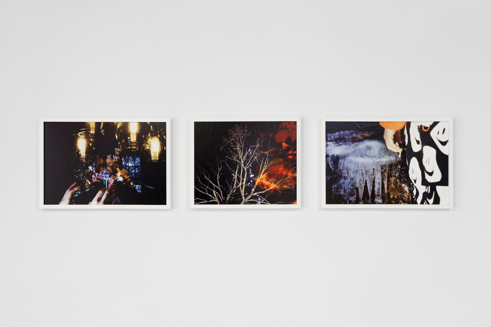
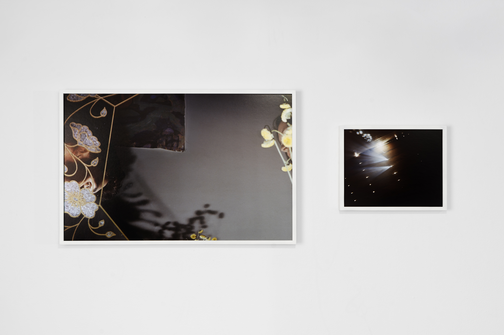
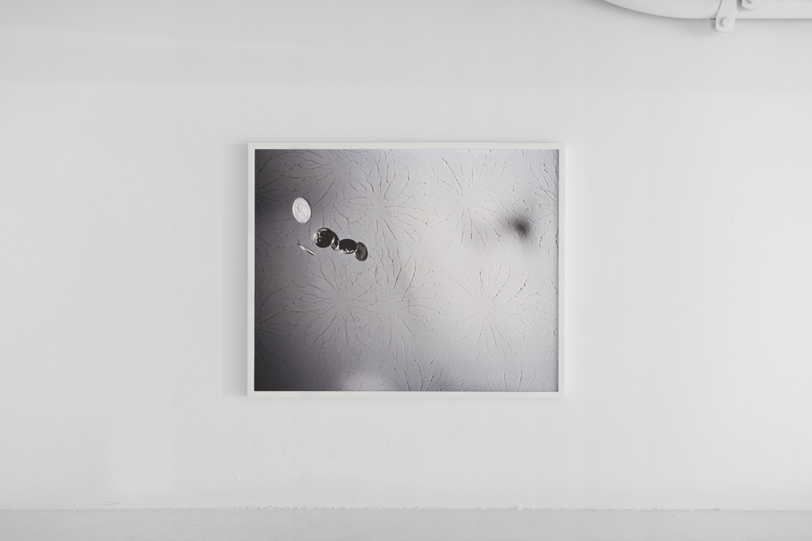

Installation view at Yale School of Art, 2022.
  A mid-sleep realization that at some point, western psychotherapy was entirely made up. Quickens the heart and makes the eyes fly open. A vision of home meets a pang of desire for escape. The meeting place between old and small. Two emotional geniuses on the beach, doing something fucked with mirrors. If you need me, I’ll be in my room kicking my own ass.
Every day you must put aside your dedication to the truth.
Only the type a personalities come out for mud wrestling. In the public garden where, years before, everyone accidentally touched the poisonous flower. It was planted in the middle of medicinal plants. Perhaps we continue to water it. In any case, it's time for another communal erotic experience. “There was something like abandon in the air. There was something like the feeling of silk scarves in the air.” Sleeping head to foot in a 22 year old boy’s meticulously organized attic bedroom. In the august heat we are wretched and on zzzquil. A friend once said “you can know a lot about me if you know that coney island is my favorite place on earth.”
In every embodied emotion, a moment in time where it loses the capacity to hold itself. You see the bottom fall out. Looking for something left behind from the old house, there was nothing but an old ring made for a baby. Some esoteric Irish tradition fit halfway down your pinky. Turning somersaults and listening to Leonard Cohen. Patching the leaks in your life. A chasm that opens sometimes. Outside at night, on acid, standing in silence. It’s giving haunted snow globe. Hopped up on herbal aphrodisiacs and making a huge, bad painting. Something that grows over time and feels safe and real.
There was a summer we ate nothing but porridge. Sneaking time away for something stupid and meaning making, there were days in high school writing on each other’s shoes in sharpie. There were gum wrappers to shred during phone calls. There was a particular afternoon, tossing a bowl filled with marbles down the stairs.
—Marymoore Dalton